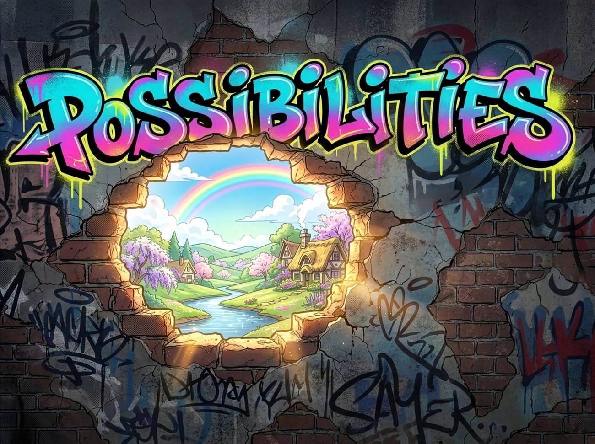
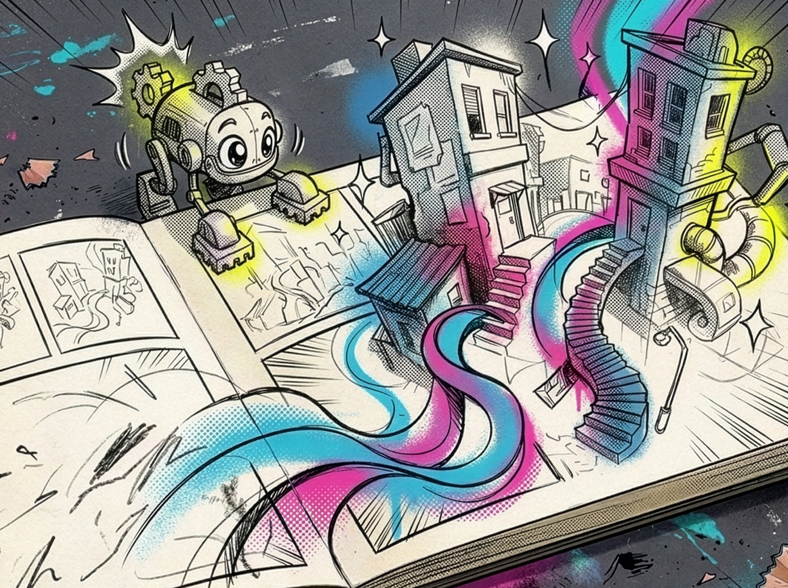
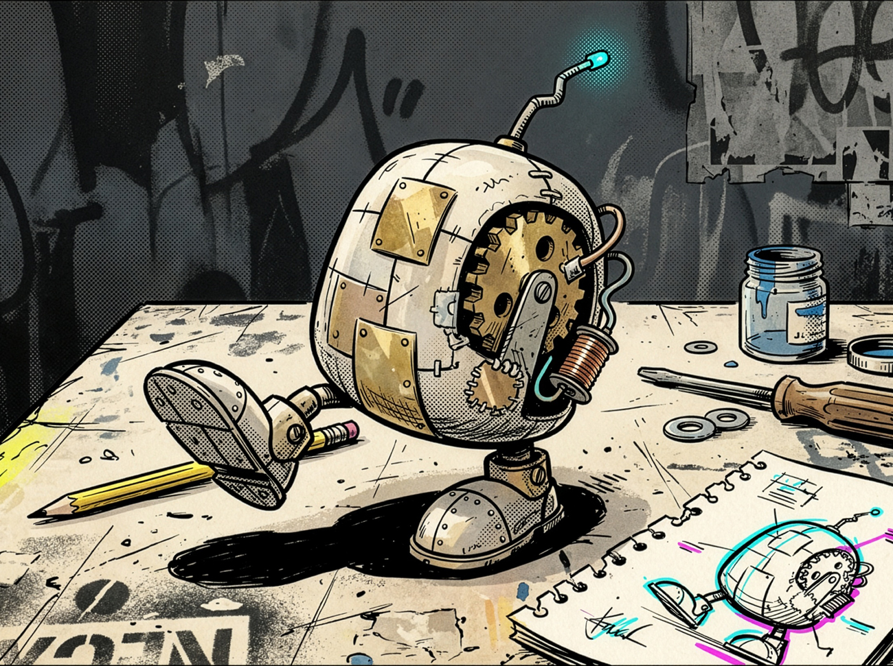

A spark is only the beginning.
I’m Allan Zelsman. What lights me up is growth—starting with a spark and watching it expand into something new and exciting.
That might be an idea taking shape, a group finding its rhythm, or someone seeing a possibility they hadn’t considered. I enjoy being part of that discovery.
Curiosity is where it starts.
I geek out on human behavior—how our minds work, the patterns we recognize, and the assumptions we don’t always notice.
I’m lucky to have a brain that likes to match patterns. Looking closely—and sometimes looking differently—can reveal something that was hiding in plain sight and that’s always a bit of magic.

Always look at things with a childlike curiosity.

Imagine what else it could be.

Make it real. See what happens.
Better ideas have room to grow.
I believe there’s power in bringing people together around a challenge. Different experiences and perspectives can take an idea somewhere none of us would have reached alone.
I listen before offering ideas. I want to understand what matters to people, how they see the situation, and what I might be missing. Taking time to understand the challenge helps me reach a balanced decision—and gives us a stronger basis for moving forward together.
Give it form. See what happens.
Imagination opens possibilities. Creating something gives us a way to explore them.
A sketch, a prototype, or an experiment makes an idea tangible enough to question. We can see how people respond, discover where our assumptions fall short, and let what we learn shape the next version.
That’s part of the growth I enjoy: staying engaged as the idea changes, rather than expecting it to arrive fully formed.
The experience perspective I bring.
My roots in product and experience design connect these interests: human behavior, creative exploration, and the practical work of making something useful.
In an organization, that means listening across product, design, and engineering, bringing evidence into difficult discussions, and helping people make decisions they can carry into the work.
The technology changes. My interest in the people creating and experiencing it remains.